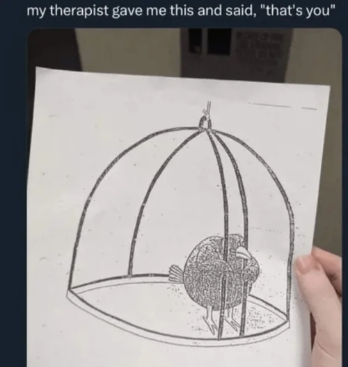

I can fix me, and I will / 31th October, 2026
Just a head-ups: my main points here are to bully myself so I feel stupid and go and fix my bullshit, Finally, ah, and to make a month wrap, of course 😎 That's basically going to be nothing but a poorly structured ramblings wall, since that's actually only a half of a month recap, and not much happened (and even less than not much is something I feel like talking about publically) so yea a vagueposting with me as its only target audience it is yay
Good thing: I believe I've managed to make most of originally planned pages here, which is so exciting to me honestly :]] I plan to add favorite dynamics page (so I Fully cover all of possible half-analytical-half-escapist topics I can think of, haha) + to eventually make at least one separate musical album-related post, but that's a) probably the hardest one for me to do properly because it's hard for me to articulate my thoughts and feelings substantively when it comes to albums of all things + requires a proper focus and time to just sit and relisten stuff with genius my beloved open and doing nothing else b) not a priority thing anyway, just something I find a very curious thing to do eventually. Otherwise all I need to do is to update stuff gradualy when I feel like it, and damn it does feel good to have an eternal work in progress thing to tinker with and to develop/optimise/decorate more with time. Overcoming my stupid anxiety about not knowing enough and actually starting to work on my neocities page was actually my best decision of the last month(s). Probably one of very few good decisions, but a great one nevertheless, I'm very intrigued what this place would look like in, say, a year...Content-wise in the first place, I don't think I'll change the layout or colors much. But who knows, haha. Also! Got most? characters I wanted to get in Chicken Smoothie, which means that im chiller about the game now when I just got into it! And now I have way to many ideas of potential new ocs vaguely based of my CS pets, oh no, imagining Sisyphus happy is still my favorite thing to do.
As for not so good ones, well. I'm still in that very 'eh' point of life I'm really not proud of. My current condition is less about apathy (comparing to my previous log), which on it's own is a good sign I assume, but I feel very much, hm. Paralized? And exhausted. I'm aware of the main reasons for both, which only makes my shitass ✨condition✨ ten times dumber, frankly. The reason in question: the perfectionism (and self-shame) killed my grandma. See, I'm super behind on many things in my life right now and it bugs me and I need to do them already to regain my peace of mind and to make that crazy social to-do list that is always on the back of my mind at least a little less horrendous, But I have a very rigid sequence of actions that I 'allow' myself to do before I can make thing X. So I don't do any of that and this shit keeps snowballing. The thought process behind that I can rougly describe like «I really need to be back to posting art, but I need to finish that owed piece first and to remake another old ardwork im extremely not happy with, and also I need to reply to my friends first as I've unfortunately went back to my ghosting tendencies (oh i need to think of something cool to reply or an energy to contribute to conversation yada yada it doesn't damn matter when your reply is more then day late honey your friends want to talk to you Now) and I need to text my friends I wasn't in touch with lately but I really don't feel like i have anything significant to tell as im in my amxious hermit arc again and nothing (this good or interesting to talk about it) happened to me lately and i still owe [DELETED] draft to my brother and oc lore I promised my mutual to yap about but I need to do /thing/ first etc etc». I miss drawing properly, I miss my friends, I miss actually feeling like I'm resting instead of feeling like a guilty nervous wreck 24/7 even when I do nothing significant. I can break these patterns, all this stuff is fixable, but the only way out is through and it sucking sucks. This whole site pet project of mine is about 'make it exist first' mindset and the fact that basically just existing thing is always better than perfect, after all. My mom didn't raise a quitter, she raised a forward planner and a complainer so nah I can do this, just needed to remind myself how ridiculous it all is 😎 I can fix me and I will.
Vent over! I kind of like that montly logs add some kind of additional, errr, responsibility I think? To actually do something. So, see y'all later, and hopefully not in 25 years! Still have zero understanding of what I want from the blog tags though, so they're super random for now..
Happy halloween to everyone who celebrates! I don't, personally, but I find the event and everything about it Extremely cool!

- Oc of the month: Despite the fact my website fixation still holds me in a chokehold, I've been thinking about my Manchester dead gals club quite a lot! I need to draw them properly so bad aghhh. Additional honorable mentions: Terry (original verse specifically but I still need to make a proper page for this version of her) and Cyberpunk au for my FnV and 1980s ocs, sponsored by watching s.2 of the Edgerunners. The itch to play the game is here again, ough.
- Hobby of the month: Nothing changed much, still the website setting up thing :D
- Band of the month: Hmhmhm. Still didn't listen to any album specifically, but let it be the Cure (PARTLY because the opening song of the Edgerunners second season opening song is 10:15 Saturday Night and I've just finished watching it lmao. And I tend to relisten to the Forest or One Hundred Years when I open my toyhouse page. Favorite songs curse it is)
- Last finished media: Cyberpunk: Edgerunners 2 (2026) I finished watching today (well. yesterday. 30th of october) and a season 3 of The Malevolent (2020-2026) earlier this week!